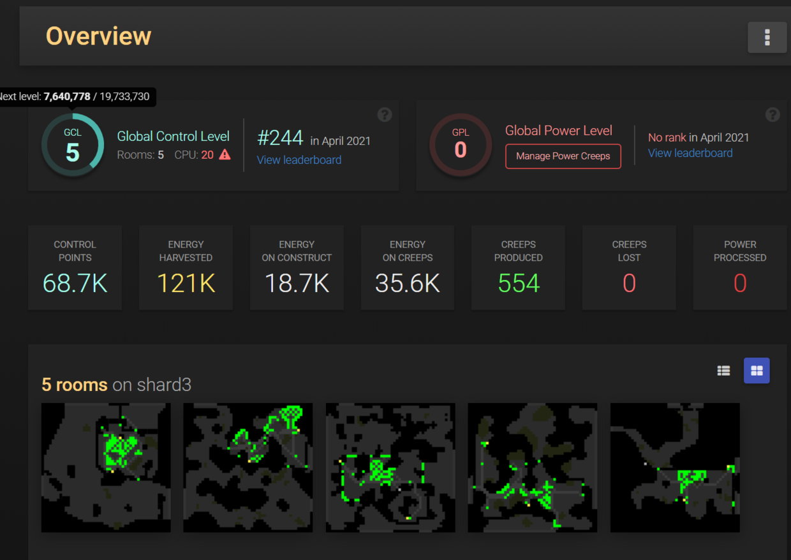
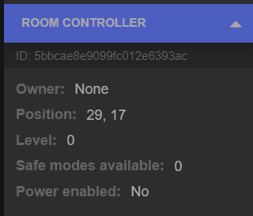
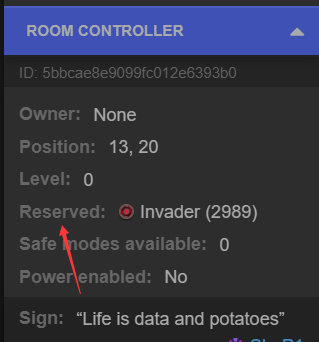
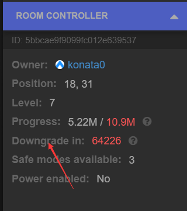
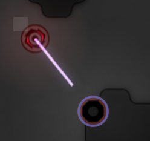
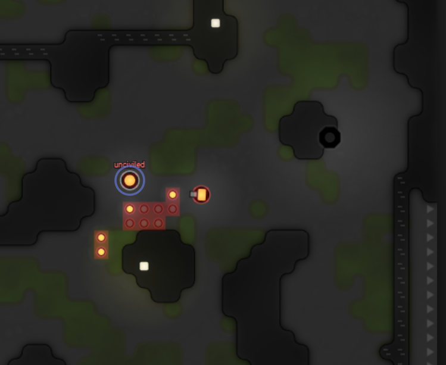
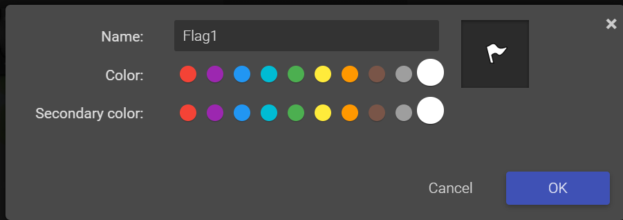

[screeps]room扩张 简单的开房攻略

每升1级global contriller level（gcl）就可以多控制一个房间，多控制房间采集energy给controller又能加速gcl升级的速率。 并且开房稳赚不赔，你想，开1个房2个source的能量，不比开个外矿或者提高energy转化率来的实在，只需要调整一下room,role部分的代码开的新房间还适用。 下面给大家一个简单的开房攻略，我们的目的是开新房快乐种田，不和人打架，所以不选择有人的房间扩张。
看文档
先看看扩张需要的api都有什么
creep的行为
- claimController
占领一个中立的房间。需要
CLAIM身体部件。目标必须与 creep 相邻。你需要有对应的全局控制等级(Global Control Level)才能占领新的房间。如果你没有足够的 GCL。请考虑 预定(reserving) 该房间。点击了解更多
claimController用来占领房间，claimController的目标是0级没有owner，没有reserve预定的controller，如果满足这些条件，就可以派一个claimer戳一下controller，这个房间就是你的了。
- attackController
攻击时，每个 CLAIM 身体部件都能使得房间控制器的降级计时器降低 300 tick，或者将预定计时器降低 1 tick。如果受到攻击的控制器已经有所属者，则接下来的 1000 tick 将无法升级(upgrade)或再次进行攻击。目标必须与 creep 相邻。
如果房间内controller等级不是0级，attackController可以加快降级速度 如果房间内controller被预定，attackController可以减少预定时间，预定时间0了之后，就可以claimController宣布这个房间是你的了
- dismantle
拆解任意可以建造的建筑（即使是敌人的）并且返回 50% 其修理所花的能量。需要 WORK 身体部件。如果 creep 有空余的 CARRY 身体部件，则会直接将能量转移进去；否则能量将掉落在地上。目标必须与 creep 相邻。
dismantle用来拆敌人的spawn，attack也能打spawn，不过既然有用来harvest和build的WORK部件，用dismantle更好一些，还能获得一些能量。 4. attack 可以attack InvaderCore或者敌人的spawn 5. harvest/build 这个大家都懂 在占领controller拿到房间控制权后，需要在房间内建造spawn房间才能运作起来，所以这里需要一个harverster和builder合体功能的creep帮你建造spawn
把这些行为最简单的分为2个role去搞定他，实现这些动作需要WORK、ATTACK 、CARRY、MOVE、CLAIM，因为带有CLAIM部件的creep寿命只有600tick，单独用一个creep当作claimer，剩下的动作由一个WORK,ATTACK,CARRY的多功能creep完成
可能遇到的事件
controller
- 0级controller 公共房间

派一个claimer过去用claimController戳一下controller
2. reserving 被预定

派一个claimer过去用attackController一直戳controller，直到可以claim为止
3. 1级以上的controller 被占领的房间

这里有2种方案，一种是等自然降级，另一种是主动派一个claimer去加速降级
因为attack的controller有1000cd，所以隔一段时间，派一个claimer过去用attackController戳一下controller，直到可以claim为止
InvaderCore

InvaderCore会刷在房间内的controller旁边reserve预定controller 需要派1个带attack部件的creep去attack Core，同时派一个climer按照上面的逻辑去解除预定
敌方spawn

像这种经营不善，controller掉没了，就剩一个spawn了的房间，估计主人也不要了，我们就可以占领 controller是可以直接claim，但是房间内要是存在spawn的话，你的spawn是没办法放下去的，所以要吧原主人的spawn拆掉，需要带有WORK的不见使用dismantle拆掉spawn扩张流程
- 选址 我觉得大家都会，挑好看的房就行了，最好双矿，别当着别人出去的路，别距离你出claimer的spawn太远600tick走的过去就好
- 标记flag/寻路

flag是一个很好的人机交互用的标志，代码中可以判断flag代表你与你的代码交互了。比如你可以在你要扩张的房间上插一个棋子，代码判断出你的🚩，知道你要入侵，那么就执行入侵代码，比如说提前寻好路。 寻路的话，使用PathFinder设计你生产creep的spawn到你要扩张的room间的路线，缓存挂在global上，给你扩张用的creep走路用 3. 清除房间的障碍/占领房间 按照【可能遇到的事件】中的解决方法去清除房间的障碍/占领房间 4. 建造spawn 放下建筑工地，带有WORK部件的creep在新房间就地采矿，修建spawn 5. 完成扩张，清除你的flag与缓存 在controller属于你，并且房间内存在你的spawn就认为你的扩张成功了，新房间已经可以按照你的逻辑运营了，但不要忘记清除你为了扩张生成的缓存垃圾